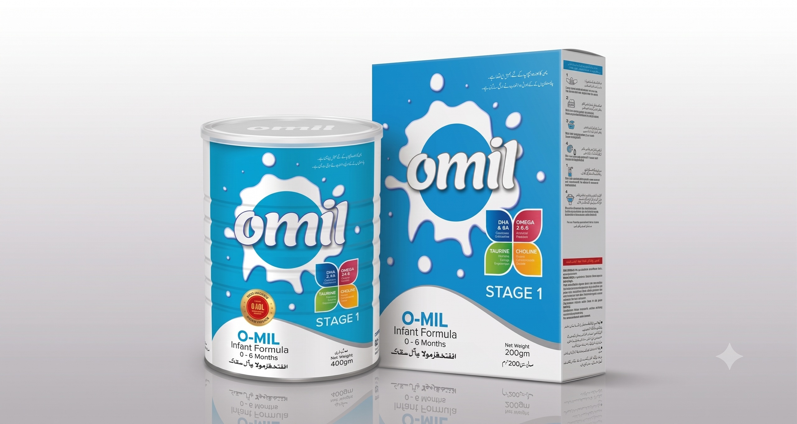
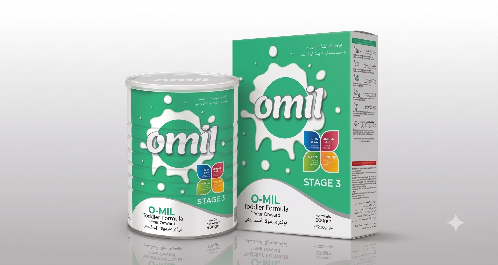
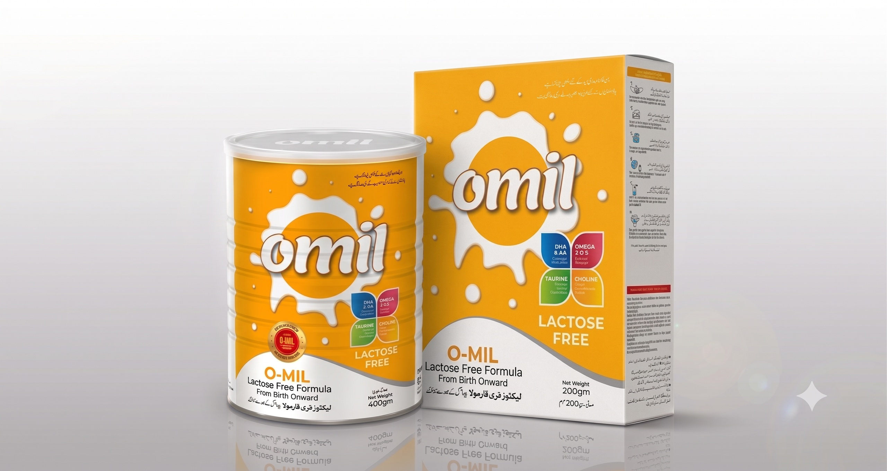
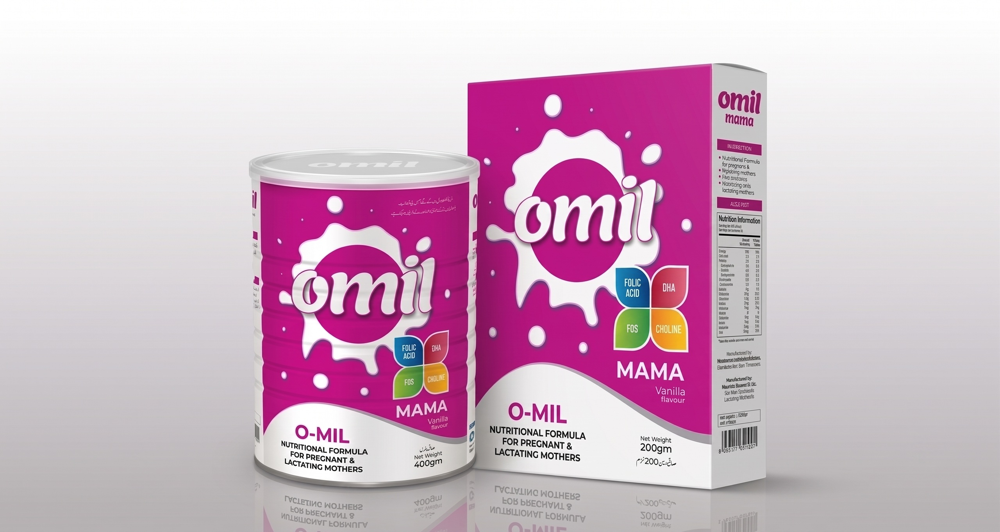

Under our brand Omil, we offer a diverse variety of nutrition products which provide complete & balanced nutrition for different stages of life, be it the early days of your child's life, or for women during pregnancy & lactation. Omil Formula product offerings include Omil S1-Infant Formula, Omil S2-Follow Up Formula, Omil Grow-Growing Up Formula, Omil LF-Lactose Free Formula & Omil Mama-Nutritional Supplement for Pregnant & Lactating Mothers.

Omil S1 is enriched with all the vital nutrients needed to fuel up the amazing rate of growth & development of your baby from early stage of life.
Omil S2 is a complete, nutritionally balanced follow-up formula designed to fulfil the nutritional needs of a growing baby as he starts solid food.


Omil Grow provides levels of protein and certain nutrients, vitamins and minerals which are required to fulfill your child's growing-up nutritional needs during the magical first 3 years of life.
Omil LF formula contains a unique formulation for the dietary management of fussiness, gas, diarrhea and abdominal pain due to lactose intolerance in infants.


Head Office:
Office # 624, Hoor Center, North Napier Road, Karachi - Pakistan
Sales Office:
Office # 9, 2nd Floor, Zeenat Medicine Market, Fatimah Jinnah Road Quetta - Pakistan